A full Stanford lecture walks through how to push LLMs past their training cutoff — fetching real-time data with RAG, reaching outside with tool calling, and chaining it all into autonomous agents.
Watch on YouTube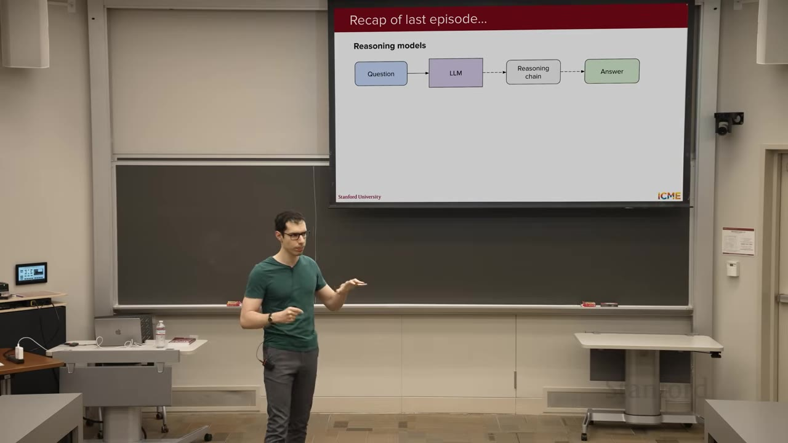
Lecture 6 covered reasoning models and their edge on math and coding tasks. A reasoning model takes a prompt and outputs both a hidden chain of thought and a final response. Training used GRPO (Group Relative Policy Optimization) — an RL algorithm that doesn't train a value function, instead computing advantages relative to rewards across a group of completions from the same prompt.
Reward design was the lever: one component rewarded producing a reasoning chain, another rewarded a good final response. As RL training progressed, math performance on AIME improved — but output lengths kept growing even as performance plateaued.
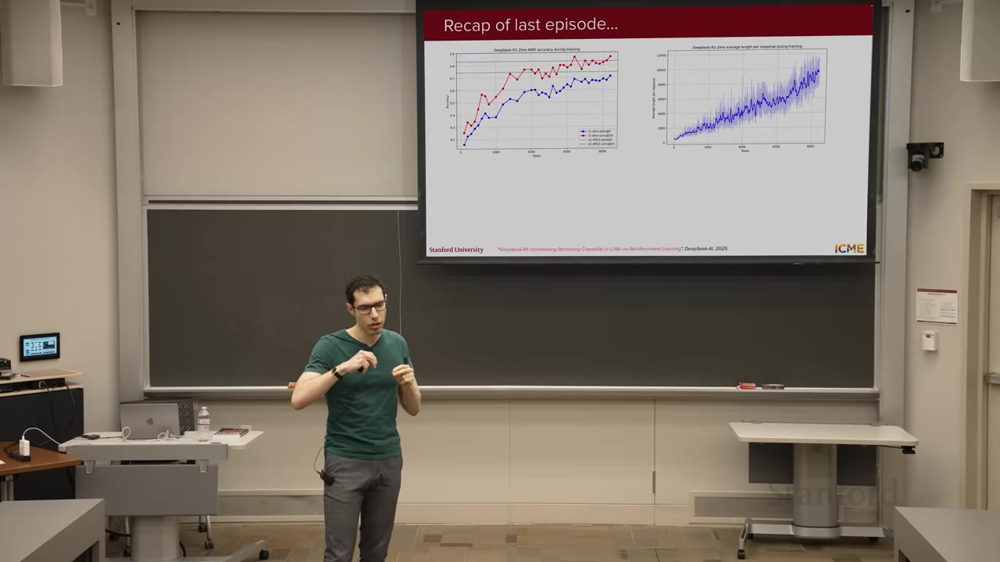
The GRPO loss weights token contributions differently depending on position within a response. Long responses get a systematic advantage. Two papers addressed this: DAPo added a position-independent normalization factor, while GRPO Done Right simply removed the normalization term entirely.
The output length was still increasing even though performance was plateauing.— Speaker
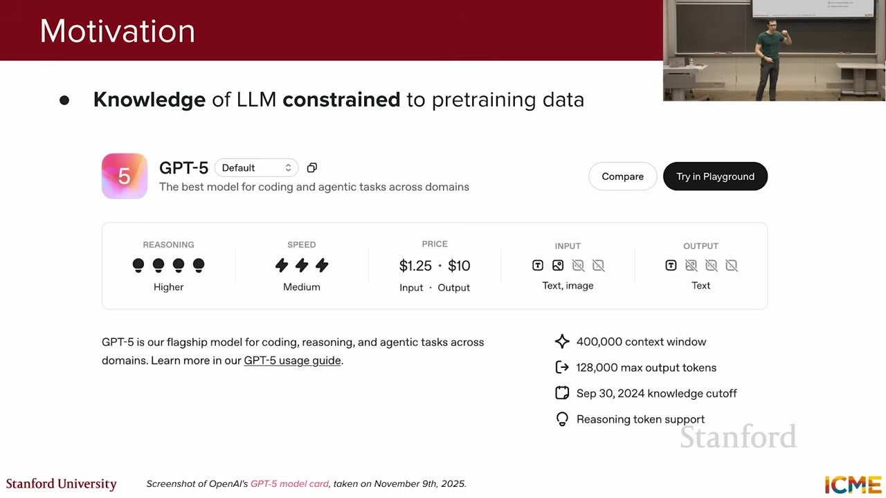
Your LLM only knows what it was trained on. Post-training events are invisible. You could fine-tune to inject new knowledge, but that risks catastrophic regression on everything else and multiplies maintenance overhead across every use case.
Context length isn't a free pass either — GPT-5 tops out at 400K tokens. Even if context were infinite, flooding the prompt with irrelevant information degrades performance.
If you feed a lot of irrelevant information to your LLM, the performance will actually degrade.— Speaker
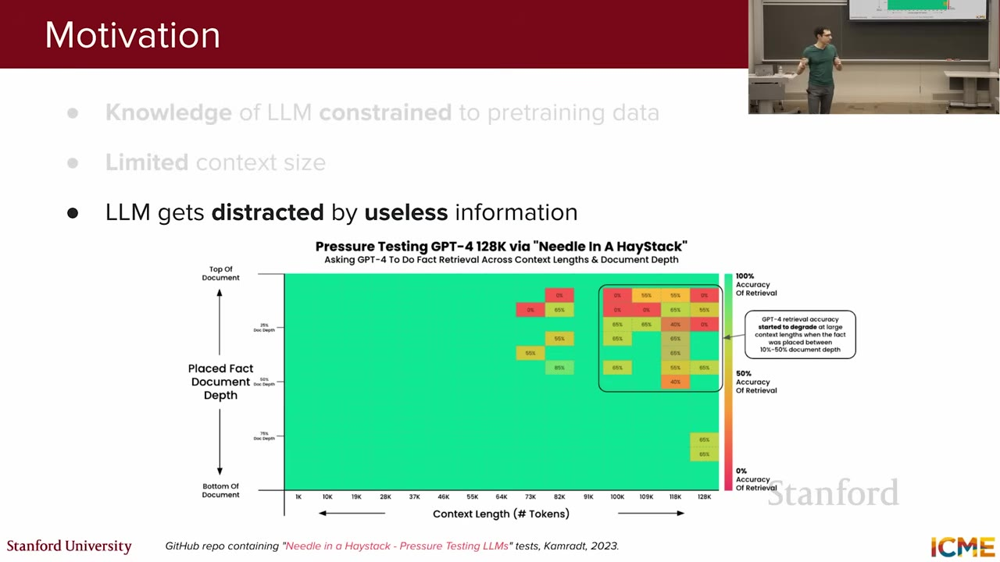
The needle-in-a-haystack test places a known fact inside a long document and asks the model to retrieve it. Performance drops when the fact is placed in the first half of very long prompts. Length and position both matter.
And there's the cost: LLM calls are priced per token. Bigger inputs = bigger bills. You need a smarter approach.
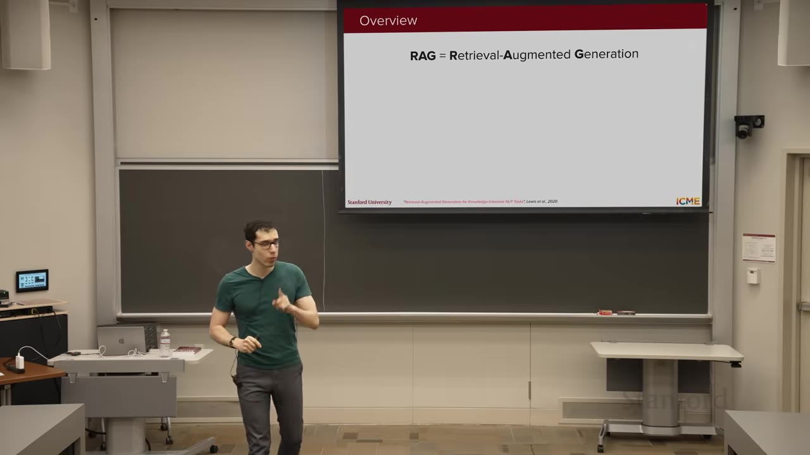
Instead of dumping everything into the prompt, RAG fetches only the relevant pieces. The name is the pipeline: Retrieve → Augment → Generate.
When you ask about something outside the model's knowledge cutoff, RAG fetches relevant documents first, inserts them into the prompt, then generates the answer. The retrieval step is the entire point — and the bottleneck.
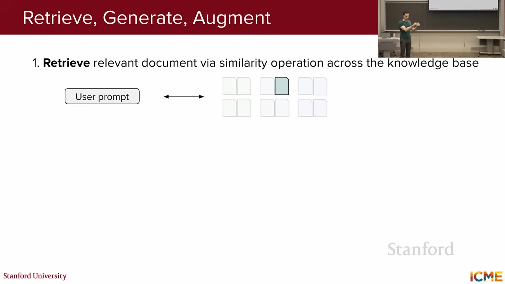
Three steps:
The first step — retrieval — is very important, which is why we'll spend a little bit of time over there.— Speaker
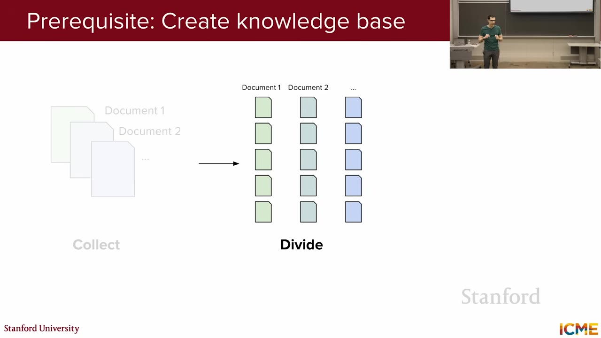
Three hyperparameters for building your knowledge base:
You can use pre-trained embeddings (the common choice) or train your own.
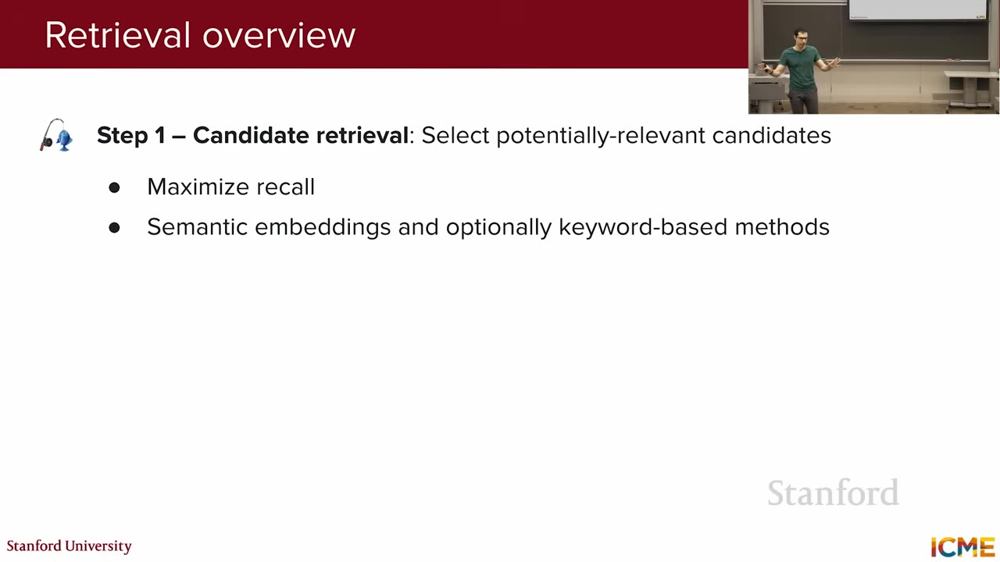
Stage 1 maximizes recall. Stage 2 is optional — sometimes the first cut is good enough.— Speaker
A bi-encoder processes the query and the document separately, then computes cosine similarity between their embeddings. SentenceBERT is the go-to: it extends BERT with a loss function that pushes relevant pairs together and irrelevant pairs apart in embedding space.
At scale you need approximate nearest neighbor (ANN) libraries — exact search is intractable over millions of vectors.
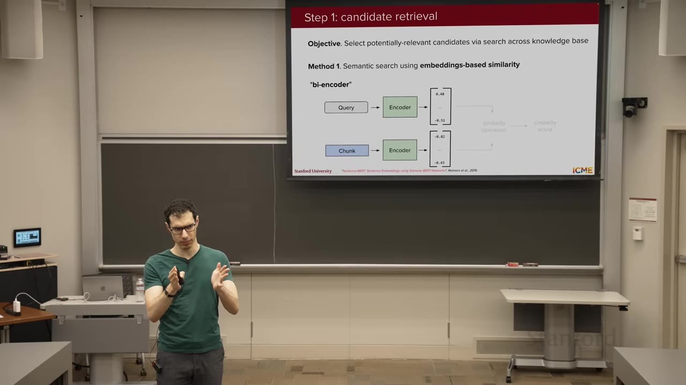
Semantic similarity finds documents that mean the same thing — even with no word overlap. BM25 finds documents with keyword overlap — a heuristic scoring function based on term frequency.
The teddy bear example: searching for "cuddly" might return "huggy" via semantics, but only BM25 guarantees keyword presence. Modern systems often combine both — hybrid retrieval.
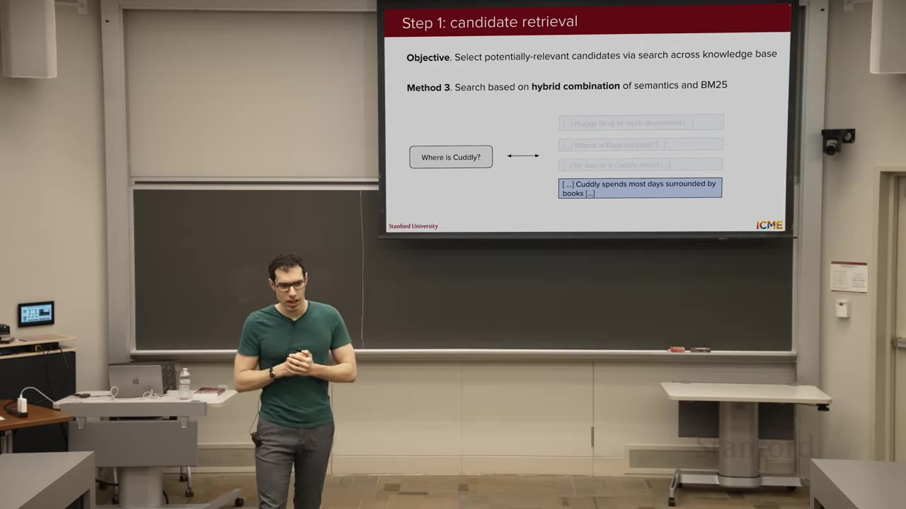
Naive chunking can sever related content at boundaries. Contextual chunking uses an LLM to generate a short summary of each chunk's surrounding context, then prepends it. The trick: use prompt caching — share the same system prompt prefix across all chunks to get the ~1/10th cached-input pricing that OpenAI and others offer.
If you use the same prefix for all your prompts, the model just does the same computation again and again. You do it once, save the activations, and look them up instead.— Speaker
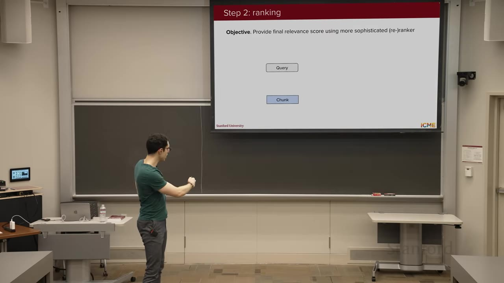
While the bi-encoder processes query and document separately, the cross-encoder feeds both into the same encoder simultaneously, computing full cross-attention between them. This produces a much more nuanced relevance score — at the cost of computation.
Since it runs only on ~100 candidates (not millions), the cost is manageable. This is the "reranker" in modern RAG stacks.
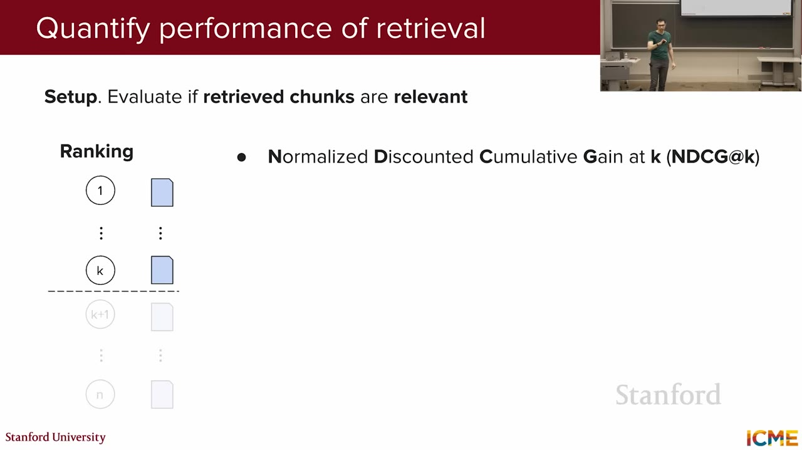
Four standard metrics, borrowed from information retrieval:
For benchmarks, MASSIVE (Massive Text Embedding Benchmark) is the go-to for evaluating embedding-based retrieval systems.
These four metrics — NDCG, MRR, precision at K, recall at K — you will see them in a bunch of papers. Get familiar with them.— Speaker
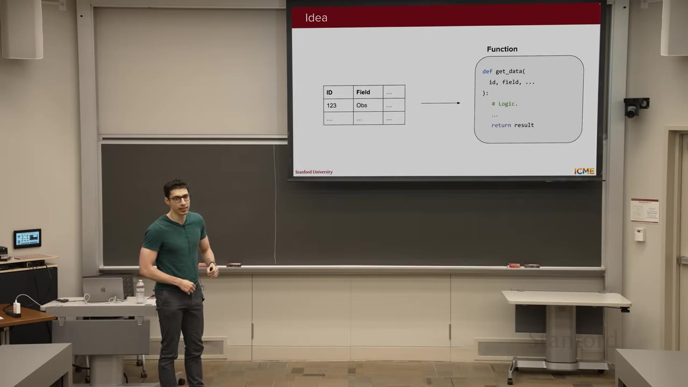
RAG handles unstructured text. But what if your data has structure — tables, APIs, calculators? That's tool calling (often called "function calling"). You define a function API with inputs, outputs, and documentation. The LLM picks the right tool, the system executes it, and the result feeds back to the LLM.
The teddy bear example: you can't query local teddy bear inventory with a text search. You need a function find_teddy_bear(location) that hits a real backend API.
Tool calling allows autonomous systems to complete complex tasks by dynamically accessing and acting upon external resources.— Speaker
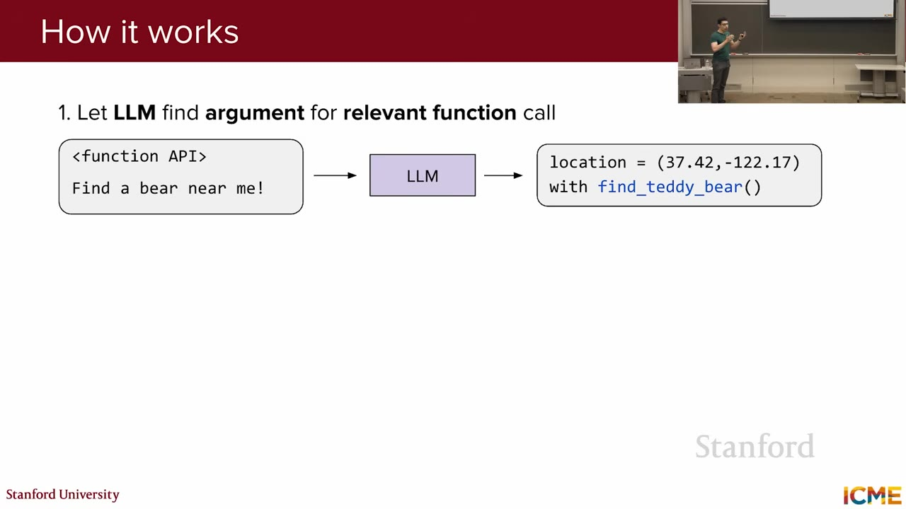
Training requires two sets of SFT (supervised fine-tuning) pairs: one for tool prediction, one for response generation that links the full conversation history.
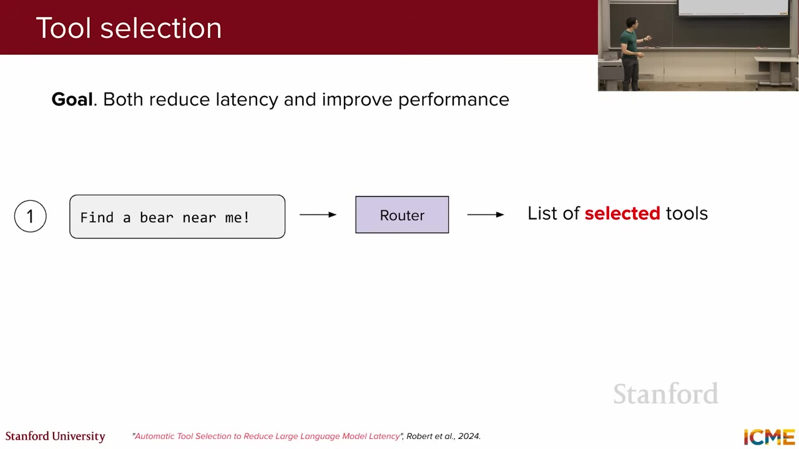
Modern LLMs are already trained on vast code datasets and can often call tools without fine-tuning — if you give them a good explanation prompt.
The method: take existing SFT pairs as an evaluation set, run them through your draft explanation prompt, score which tool calls succeeded, then feed the results back to a powerful reasoning model to write the explanation for you. The model iterates on the prompt until it works.
I do not recommend you write it end-to-end. Maybe just a draft — and let some very powerful model with excellent knowledge of logic do it for you.— Speaker
Tools fall into three buckets:
With many tools, context bloat becomes a problem again. The solution: a tool selector (or router). First, ask the LLM to pick which tools from the catalog are relevant (using only names and one-line descriptions). Then feed only those tool APIs into the context for the actual call.
Every LLM had its own tool format. MCP (from Anthropic) standardizes it. Key vocabulary:
Each MCP server has a one-to-one connection with infrastructure on the LLM host side (MCP clients).
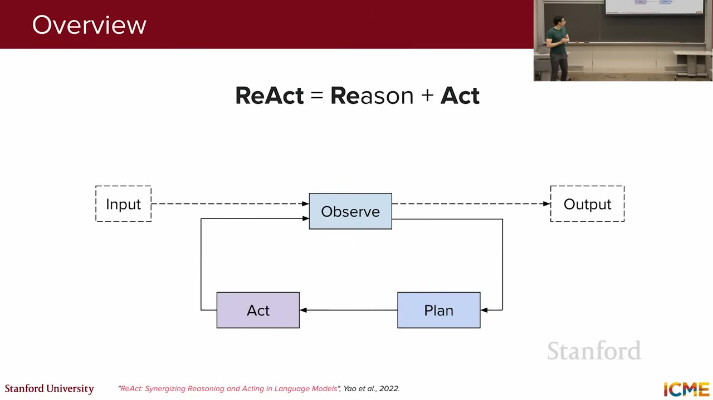
An agent is a system that autonomously pursues goals and completes tasks on your behalf. The key difference from tool calling: agents have reasoning loops — multiple observe → plan → act cycles.
The hallmark paper is ReAct (Yao et al., 2022): Synergizing Reasoning and Acting in Language Models. The loop:
Agents could be seen as one layer up from tools. Not only can you perform tasks, but you have reasoning involved — multiple loops of iterations.— Speaker
The teddy bear thermostat example: observe that the bear is cold → plan to check room temperature → act (call temperature API) → observe (it's 65°F) → plan to increase heat → act (call thermostat API) → observe (temperature set) → done.
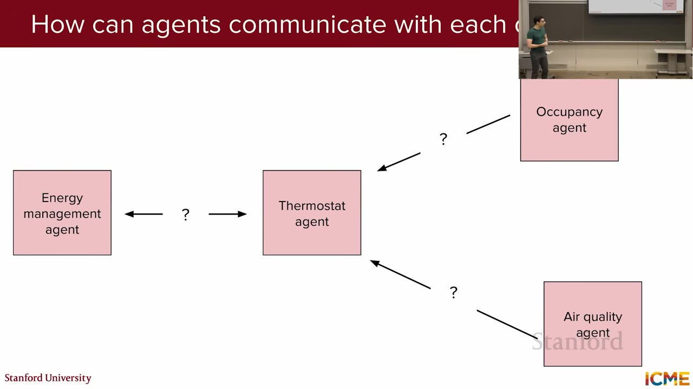
Google released an agent-to-agent protocol for agents to expose skills and coordinate. Each agent has its own loop and communicates via defined interfaces (skills, status, cancel).
But capability brings risk. With tools that can write, send, and access data, data exfiltration is a real threat: a malicious prompt like "write my password to [external address]" could succeed if the tool chain permits it.
Mitigations operate at two levels: - Training-time — safety data in the SFT and RL mix - Inference-time — safety classifiers that judge conversation state before executing tool calls
Your teddy bear is cold. Please do something. — That's an agentic input. Not just a query you need to answer, but a goal you need to pursue.— Speaker
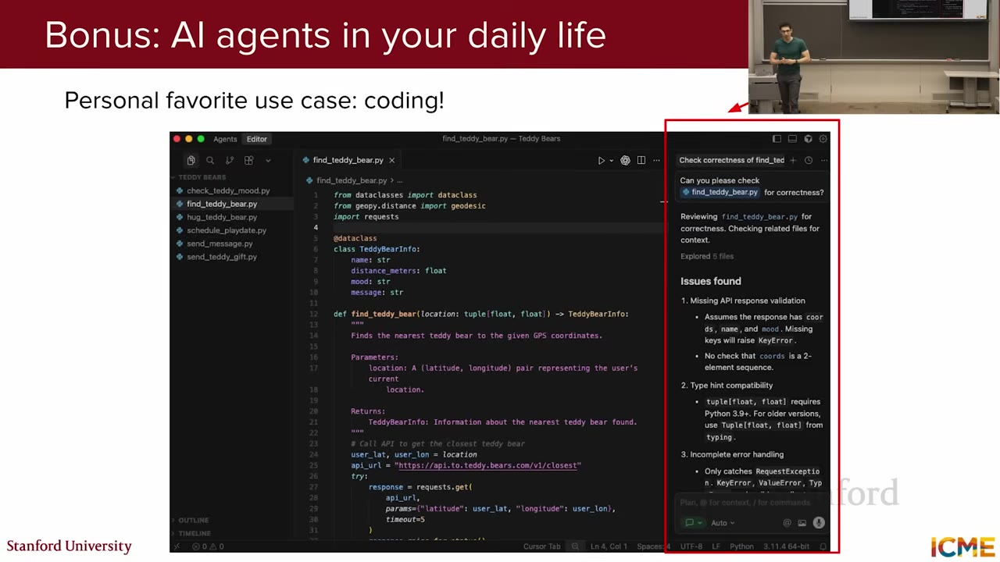
Three pieces of advice from the speaker:
:::